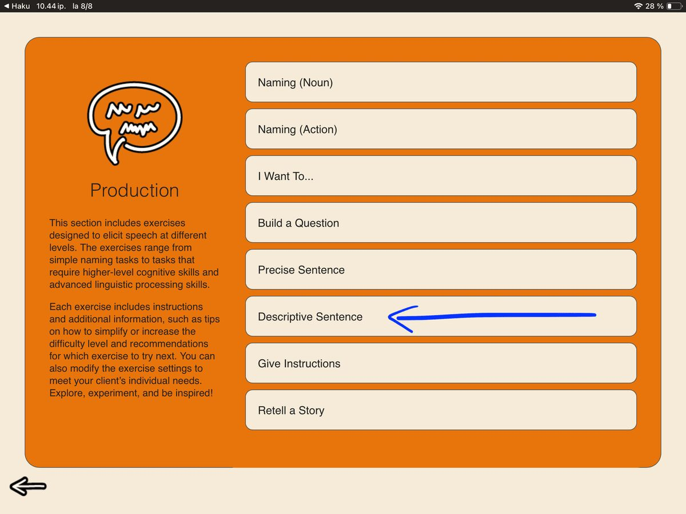
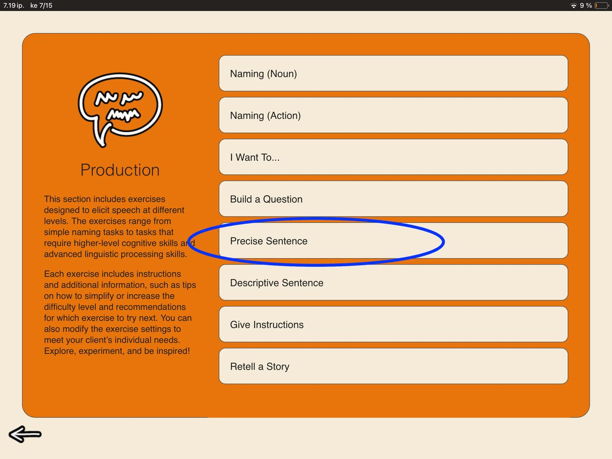
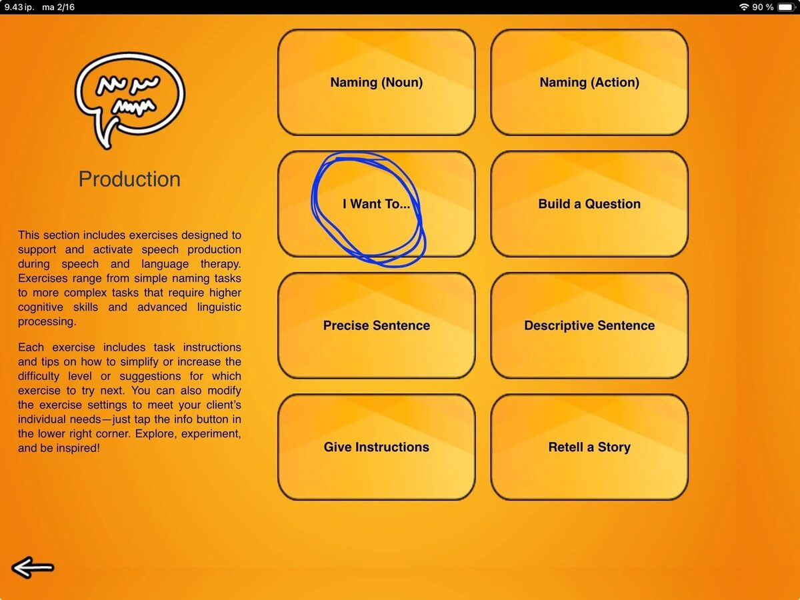
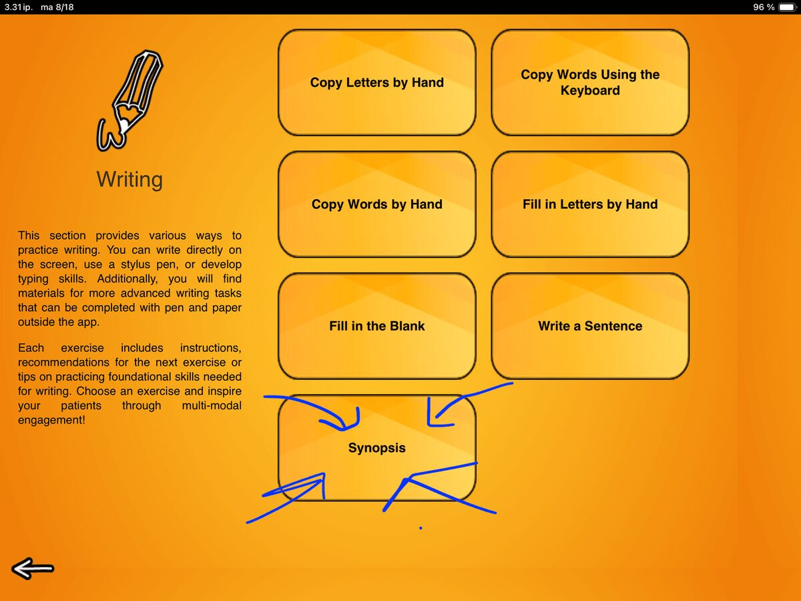

Blog
All The Things I Love About Speech Therapy With Adults
Blog available only in English.
 Sanapsis Lite
Sanapsis Lite has had a refresh! The free demo version of SanapsisPro now mirrors the full app with a new look.
Sanapsis Lite
Sanapsis Lite has had a refresh! The free demo version of SanapsisPro now mirrors the full app with a new look.

Let's add some color! Next up in the Speech Production category is Descriptive Sentence.
To the point! Next up in the Speech Production category is Precise Sentence. This exercise is all about precise, concise expression. So, in the spirit of the task, let's keep this post short and simple too. summer season, fresh look
In Finland, there is an expression about shedding your “winter fur” when you take the first swim of the summer.
summer season, fresh look
In Finland, there is an expression about shedding your “winter fur” when you take the first swim of the summer.
 We have questions
Questions are a powerhouse for everyday communication and connection. They help us show interest, seek information, clarify meaning, repair misunderstandings, and take a more active role in conversations overall.
We have questions
Questions are a powerhouse for everyday communication and connection. They help us show interest, seek information, clarify meaning, repair misunderstandings, and take a more active role in conversations overall.

I Want To… Next task in our SanapsisPro Production category is a task called I want to… This task has two to four action pictures on screen and a prompt that says “I want to…” Naming Nouns and Actions
To kick things off for the Speech Production category, I will cover not just one, but two tasks in this first post! These tasks are Naming, Nouns and Naming, Actions.
Naming Nouns and Actions
To kick things off for the Speech Production category, I will cover not just one, but two tasks in this first post! These tasks are Naming, Nouns and Naming, Actions.
 New update - Speech Production category
Happy to announce that the Speech Production category update is live!
New update - Speech Production category
Happy to announce that the Speech Production category update is live!

Next up: Synopsis (and a fun fact about the name Sanapsis) Synopsis is the last, but not least, task of the Reading exercises before moving on to the Speech Production category tasks. First task of 2026 - Write a Sentence
Let’s start the new year with a surprisingly complex and versatile task from our Writing category: Write a Sentence.
First task of 2026 - Write a Sentence
Let’s start the new year with a surprisingly complex and versatile task from our Writing category: Write a Sentence.